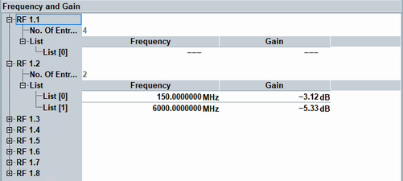

The table shows the configured frequency list and the gain measured per list entry.
Use the table and the frequency list to get results for specific frequencies, for example to create a frequency-dependent attenuation table.
